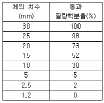
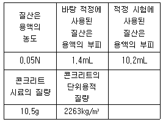
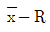
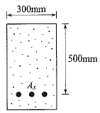
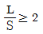
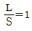
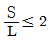
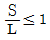
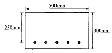

콘크리트기사 (2015-08-16 기출문제)
1과목: 재료 및 배합
1. 일반 콘크리트에서 물-결합재비에 대한 설명으로 틀린 것은?
- 압축강도와 물-결합재비와의 관계는 시험에 의해 정하는 것은 원칙으로 한다. 이 때 공시체는 재령 28일을 표준으로 한다.
- 제방화학제가 사용되는 콘크리트의 물-결합재비는 45% 이하로 한다.
- 콘크리트의 수밀성을 기준으로 물-결합재비를 정할 경우 그 값은 40% 이하로 한다.
- 콘크리트의 탄산화 저항성을 고려하여 물-결합재비를 정할 경우 55% 이하로 한다.
(정답률: 69%)

2. 콘크리트의 배합에서 잔골재율에 대한 설명으로 틀린 것은?
- 소요의 워커빌리티를 얻을 수 있는 범위 내에서 단위수량이 최소가 되도록 시험에 의해 정하여야 한다.
- 공사 중에 잔골재의 입도가 변하여 조립률이 ±0.20이상 차이가 있을 경우에는 배합을 수정할 필요가 있다.
- 유동화 콘크리트의 경우, 유동화 후 콘크리트의 워커빌리티를 고려하여 잔골재율을 결정할 필요가 있다.
- 고성능 공기연행감수제를 사용한 콘크리트의 경우로서 물-결합재비 및 슬럼프가 같으면, 일반적인 공기연행감수제를 사용한 콘크리트와 비교하여 잔골재율을 1~2% 정도 작게 하는 것이 좋다.
(정답률: 63%)
3. 시멘트 클링커 화합물에 대한 설명 중 옳지 않은 것은?
- C3S의 수화열보다 C2S의 수화열이 적게 발열된다.
- 조기 강도 발현에 가장 큰 영향을 주는 화합물은 C3S이다.
- 콘크리트 구조물의 건조수축을 줄이기 위하여 C2S와 C3A가 많은 시멘트를 사용해야 한다.
- 구조물의 화학저항성을 향상시키기 위하여 C2S와 C4AF가 많은 시멘트를 사용해야 한다.
(정답률: 45%)
4. 고강도콘크리트의 배합에 관한 설명으로 잘못된 것은?
- 유동성을 향상시키고 배합시의 단위수량을 줄이기 위해 고성능 감수제를 사용한다.
- 플라이애시 등의 혼화재를 사용하면 시멘트량이 상대적으로 줄어들기 때문에 장기적인 소요강도를 얻기가 힘들다.
- 기상의 변화가 심하거나 동결융해에 대한 대책이 필요한 경우를 제외하고는 AE제를 사용하지 않는 것을 원칙으로 한다.
- 고강도콘크리트의 단위시멘트량은 소요 워커빌리티와 강도가 얻어지는 범위에서 가능한 적게 되도록 한다.
(정답률: 72%)
5. 좋은 입도의 골재를 사용한 콘크리트의 특징이 아닌 것은?
- 건조수축이 크고 내구성이 증진된다.
- 재료의 분리가 적고 작업성이 좋다.
- 단위수량 및 단위시멘트량도 적어진다.
- 밀실한 콘크리트를 제조할 수 있다.
(정답률: 82%)
6. 조립률이 1.65인 잔골재 A와 조립률이 3.65인 잔골재 B를 혼합하여 조립률이 2.85인 잔골재를 만들려고 할 때, 잔골재 A와 B의 혼합비는?
- A : B = 1 : 2
- A : B = 2 : 3
- A : B = 3 : 4
- A : B = 4 : 5
(정답률: 71%)
7. 시멘트의 강도시험(KS L ISO 679)을 실시하고자 모르타르를 제작하려고 한다. 시멘트 450g을 사용할 경우 필요한 표준사의 질량은?
- 1000g
- 1350g
- 2⑤2g
- 2280g
(정답률: 83%)
8. KS L 5110 시멘트 비중 시험에 의하여 플라이애시의 비중시험을 실시한 결과, 광유를 르샤틀리에 비중병에 넣고 안정된 후 측정한 눈금이 0.7mL였다. 이 비중병에 플라이애시 40g을 넣고 광유가 올라온 눈금을 측정한 결과 18.5mL를 얻었다. 플라이애시의 비중은?
- 2.25
- 2.55
- 2.85
- 3.15
(정답률: 71%)
9. 철근콘크리트에 이용되는 길이가 300mm이고 직경이 20mm인 강봉에 인장력을 가한 결과 2.34×10-1mm가 신장되었다면 이 때 강봉에 가해진 인장력은 얼마인가? (단, 강봉의 탄성계수 = 2.0×105N/mm2)
- 20kN
- 37kN
- 40kN
- 49kN
(정답률: 55%)
10. 시멘트의 제조 방법 중 습식법에 대한 설명으로 옳지 않은 것은?
- 열량손실이 많다.
- 원료를 미분말화 하기가 쉽다.
- 먼지가 적게 난다.
- 원료 분쇄기에 물을 약 10%정도 가한 후 분쇄한다.
(정답률: 68%)
11. 콘크리트 시방배합을 현장배합으로 보정하려고 한다. 고려할 사항이 아닌 것은 어느 것인가?
- 골재의 함수 상태
- 굵은 골재 중에서 5mm체를 통과하는 양
- 혼화재의 사용양
- 혼화제를 희석시킨 희석수량
(정답률: 37%)
12. 프리캐스트 교량 부재를 만드는 회사에서 거더와 바닥판에 사용될 콘크리트를 각각 설계기준강도 50MPa과 30MPa로 결정하였을 때 거더와 바닥판에 사용될 각각의 콘크리트의 배합강도는? (단, 거더와 바닥판에 사용할 콘크리트에 대하여 30회 이상의 압축강도시험을 실시한 결과 표준편자는 5MPa로 동일하다.)
- 거더 57MPa, 바닥판 39MPa
- 거더 57MPa, 바닥판 37MPa
- 거더 59MPa, 바닥판 39MPa
- 거더 59MPa, 바닥판 37MPa
(정답률: 52%)
13. 콘크리트 시방배합 설계에서 단위골재의 절대용적이 698ℓ이고, 잔골재율이 42%, 굵은골재의 표건밀도가 0.00265g/㎣이라면 단위 굵은골재량은?
- 1072.8k
- 776.8kg
- 1082.8kg
- 778.6kg
(정답률: 49%)
14. 콘크리트용 굵은 골재의 최대치수에 대한 설명으로 틀린 것은?
- 거푸집 양 측면 사이의 최소 거리의 1/5를 초과하지 않아야 한다.
- 슬래브 두께의 1/4을 초과하지 않아야 한다.
- 개별철근, 다발철근, 긴장재 또는 덕트 사이 최소 순간격의 3/4을 초과하지 않아야 한다.
- 구조물의 단면이 큰 경우 굵은 골재의 최대치수는 40mm를 표준으로 한다.
(정답률: 75%)
15. 콘크리트용 순환 굵은 골재의 물리적 품질기준으로 틀린 것은?
- 흡수율은 3% 이하로 한다.
- 밀도는 2.0g/cm3 이상으로 한다.
- 마모감량은 40% 이하로 한다.
- 입자 모양 판정 실적률은 55% 이상으로 한다.
(정답률: 47%)
16. 콘크리트용 강섬유의 품질에 대한 설명으로 틀린 것은? (단, KS F 2564에 따른다.)
- 강섬유의 평균 인장 강도는 800MPa 이상이 되어야 한다.
- 강섬유 각각의 인장 강도는 650MPa 이상이어야 한다.
- 인장 강도의 시험은 강섬유 5t 마다 10개 이상의 시료를 무작위로 추출하여 시행해야 한다.
- 강섬유는 표면에 유해한 녹이 있어서는 안된다.
(정답률: 58%)
17. 시멘트의 비중시험(KS L 5110)에 대한 설명으로 틀린 것은?
- 온도 23±2℃에서 비중 약 0.73 이상인 완전히 탈수된 등유나 나프타를 사용한다.
- 표준 르샤틀리에 플라스크를 사용한다.
- 동일 시험자가 동일 재료에 대하여 2회 측정한 결과가 ±0.01 이내이어야 한다.
- 달리 규정한 바가 없다면, 시멘트의 비중은 시료를 접수한 상태대로 시험한다.
(정답률: 54%)
18. 다음 표는 굵은골재의 체가름시험결과를 나타낸 것이다. 이 굵은골재의 최대치수(Gmax)와 조립률(F.M.)을 나타낸 값으로 옳은 것은?

- Gmax=30mm, F.M=6.90
- Gmax=25mm, F.M=6.90
- Gmax=25mm, F.M=7.40
- Gmaxx=20mm, F.M=7.40
(정답률: 63%)
19. 마이크로필러(micro filler)효과 및 포졸란 반응이 동시에 작용하여 강도 증진 효과가 뛰어나서 고강도콘크리트용으로 사용되는 혼화재료는?
- 고로 슬래그
- 플라이애쉬
- 규조토
- 실리카 퓸
(정답률: 81%)
20. 흡수율이 2.6%인 습윤상태의 잔골재 550g을 건조로에 건조시켰더니 527g이 되었다. 이 골재의 표면수율은?
- 1.1%
- 1.3%
- 1.4%
- 1.7%
(정답률: 29%)
2과목: 제조, 시험 및 품질관리
21. 콘크리트의 블리딩을 증가시키는 요인으로 적합하지 않은 것은?
- 단위수량의 증가
- 시멘트 분말도의 증가
- 콘크리트 공기량의 저하
- 콘크리트 온도의 저하
(정답률: 43%)
22. 콘크리트의 블리딩 시험 방법에 대한 설명으로 틀린 것은?
- 시험 중에는 실온 23±2℃로 한다.
- 콘크리트를 채우고 콘크리트의 표면이 용기의 가장자리에서 3±0.3cm 낮아지도록 고른다.
- 기록한 처음 시각에서 60분 동안 10분마다, 콘크리트 표면에 스며나온 물을 빨아낸다.
- 물을 빨아내는 것을 쉽게 하기 위하여 2분 전에 두께 약 5cm의 블록을 용기의 한쪽 밑에 괴어 용기를 기울이고, 물을 빨아낸 후 수평위치로 되돌린다.
(정답률: 59%)
23. ø100×200mm 원주형 공시체로 쪼갬인장강도 시험을 수행하여 재하하중 85kN에서 파괴되었다면 쪼갬인장강도는 얼마인가?
- 2.4MPa
- 2.7MPa
- 3.0MPa
- 3.5MPa
(정답률: 65%)
24. 아래 표는 콘크리트 시료의 산-가용성 염소이온 함유량 시험결과를 정리한 것이다. 콘크리트 중에 함유된 염소이온량을 구하면?

- 0.15kg/m3
- 1.08kg/m3
- 2.18kg/m3
- 3.37kg/m3
(정답률: 28%)
25. 집단을 구성하고 있는 많은 데이터를 어떤 특징에 따라서 몇 개의 부분집단으로 나누는 것을 의미하는 것으로, 측정치에 산포를 포함하는 품질관리의 수법은?
- 층별
- 히스토그램
- 특성요인도
- 파레토도
(정답률: 63%)
26. 콘크리트의 배합설계결과 단위시멘트량이 350kg/m3인 경우 1 배치가 3m3인 믹서에서 시멘트의 1회 계량값이 1031kg일 때, 계량오차에 대한 판정결과로 옳은 것은?
- 허용 계량오차의 한계인 –1% 이내이므로 합격
- 허용 계량오차의 한계인 –1%를 초과하므로 불합격
- 허용 계량오차의 한계인 –2% 이내이므로 합격
- 허용 계량오차의 한계인 –2%를 초과하므로 불합격
(정답률: 73%)
27. 콘크리트의 건조수축에 대한 다음 설명 중 적합하지 않는 것은?
- 단위시멘트량이 증가할수록 건조수축은 커진다.
- 시멘트의 비표면적이 클수록 건조수축은 커진다.
- 단위골재량이 많을수록 건조수축은 커진다.
- 단위수량이 많을수록 건조수축은 커진다.
(정답률: 57%)
28. 콘크리트 비비기에 대한 설명으로 틀린 것은?
- 비비기를 시작하기 전에 미리 믹서 내부를 모르타르로 부착시켜야 한다.
- 재료를 믹서에 투입할 때 일반적으로 물은 다른 재로보다 먼저 넣기 시작하여 다른 재료의 투입이 끝난 후 조금 지난 뒤에 물의 주입을 끝낸다.
- 비비기는 미리 정해둔 비비기 시간의 3배 이상 계속하지 않아야 한다.
- 비비기 시작 후 최초에 배출되는 콘크리트는 사용하지 않는 것을 원칙으로 하나, 연속믹서를 사용할 경우는 사용할 수 있다.
(정답률: 56%)
29. 콘크리트 공시체의 압축강도에 대한 설명으로 틀린 것은?
- 일반적으로는 양생온도가 4~40℃의 범위에 있어서는 온도가 높을수록 재령 28일의 강도는 커진다.
- 하중재하속도가 빠를수록 강도가 크게 나타난다.
- 물-시멘트비가 일정한 콘크리트에서 공기량이 증가하면 강도가 감소한다.
- 원주형 공시체의 높이 H와 지름 D의 비인 H/D가 커질수록 압축강도는 크게 된다.
(정답률: 69%)
30. 콘크리트 품질관리 중 콘크리트의 받아들이기 품질검사에 대한 설명으로 틀린 것은?
- 콘크리트의 받아들이기 품질관리는 콘크리트를 타설하기 전에 실시하여야 한다.
- 강도검사는 압축강도 시험에 의해 실시하는 것을 표준으로 한다.
- 내구성 검사는 공기량, 염소이온량을 측정하는 것으로 한다.
- 워커빌리티의 검사는 굵은 골재 최대 치수 및 슬럼프가 설정치를 만족하는지의 여부를 확인함과 동시에 재료 분리 저항성을 외관 관찰에 의해 확인하여야 한다.
(정답률: 40%)
31. 압력법에 의한 굳지 않은 콘크리트의 공기량 시험 방법(KS F 2421)에 대한 설명으로 틀린 것은?
- 공기량 측정기의 용적은 물을 붓고 시험하는 경우 적어도 7L로 하고,물을 붓지 않고 시험하는 경우는 5L 정도 이상으로 한다.
- 이 시험 방법은 최대 치수 40mm 이하의 보통 골재를 사용한 콘크리트에 대해서 적용한다.
- 시험의 원리는 보일의 법칙을 기초로 한 것이다.
- 시료를 용기에 채우고 다지는 방법으로는 다짐봉 또는 진동기를 사용하는 방법이 있으며, 슬럼프 8cm 이상의 경우는 진동기를 사용하지 않는다.
(정답률: 67%)
32. 모르타르 및 콘크리트의 길이변화 시험(KS F 2424) 방법의 종류 중 공시체의 중심축의 길이 변화를 측정하는 것은?
- 다이얼 게이지 방법
- 콤퍼레이터 방법
- 콘택트 게이지 방법
- 스케일 방법
(정답률: 78%)
33. 콘크리트 중의 염화물 함유량에 대한 설명으로 틀린 것은?
- 콘크리트 중의 염화물 함유량은 콘크리트 중에 함유된 염소이온의 총량으로 표시한다.
- 재령 28일이 경과한 굳은 프리스트레스트 콘크리트속의 최대 수용성 염소이온량은 시멘트 질량에 대한 비율로서 0.06%를 초과하지 않도록 하여야 한다.
- 굳지 않은 콘크리트 중의 전 염소이온량은 원칙적으로 0.9kg/m3이하로 하여야 한다.
- 상수도물을 혼합수로 사용할 때 여기에 함유되어 있는 염소이온량이 불분명한 경우에는 혼합수로부터 콘크리트 중에 공급되는 염소이온량을 0.04 kg/m3로 가정할 수 있다.
(정답률: 60%)
34. 보통 콘크리트와 비교할 때 AE(air entrained) 콘크리트의 특성이 아닌 것은?
- 워커빌리티(workability)의 증가
- 동결 융해에 대한 저항성 증가
- 단위 수량 감소
- 잔골재율 증가
(정답률: 67%)
35. 일반콘크리트에서 재료의 계량에 대한 설명으로 틀린 것은?
- 계량은 현장 배합에 의해 실시하는 것으로 한다.
- 유효 흡수율의 시험에서 골재에 흡수시키는 시간은 공사 현장의 사정에 따라 다르나 실용상으로 보통 15~30분간의 흡수율을 유효 흡수율로 보아도 좋다.
- 각 재료는 1배치씩 질량으로 계량하여야 한다. 다만, 물과 혼화제 용액은 용적으로 계량해도 좋다.
- 혼화재를 녹이는 데 사용하는 물이나 혼화제를 묽게 하는 데 사용하는 물은 단위수량에 포함시키지 않아야 한다.
(정답률: 68%)
36. 시멘트의 저장에 대한 설명으로 틀린 것은?
- 시멘트는 방습적인 구조로 된 사일로 또는 창고에 품종별로 구분하여 저장하여야 한다.
- 포대시멘트를 저장할 때는 창고의 마룻바닥과 지면 사이에 0.3m 정도의 거리를 두는 것이 좋다.
- 저장기간이 길어질 우려가 있는 포대시멘트는 15포대 이하로 쌓아 올려야 한다.
- 시멘트의 온도가 너무 높을 때는 그 온도를 낮춘 다음 사용하는 것이 좋으며, 시멘트의 온도는 일반적으로 50℃정도 이하를 사용하는 것이 좋다.
(정답률: 63%)
37. 콘크리트의 압축강도, 슬럼프, 공기량 등의 특성을 관리하는데 적합한 관리도는?
- 특성요인도
- 파레토도
- 히스토그램

(정답률: 69%)
38. 굳지 않은 콘크리트의 재료분리 방지를 위한 원칙적인 주의사항으로서 틀린 것은?
- AE제 등의 혼화제를 사용하여 단위수량이 적은 된비빔의 콘크리트로 하고 또한 시멘트량이 너무 적지 않도록 한다.
- 거푸집은 시멘트 풀의 누출을 방지하고 충분한 다짐작업에 견디도록 수밀성이 높고 견고한 것을 사용한다.
- 골재는 세 · 조립이 알맞게 혼합되어 입도분포가 양호한 것을 사용하고, 특히 잔골재는 미립분이 없는 것을 사용한다.
- 타설의 경우 높은 곳에서의 자유낙하, 거푸집 내에서 장거리 흘러내림, 특히 콘크리트에 횡방향 속도가 가해진 상태로 거푸집 속으로 부어 넣어서는 안 된다.
(정답률: 52%)
39. 다음 중 소성수축균열이 발생할 수 있는 경우는?
- 철근 및 기타 매설물에 의하여 침하가 국부적으로 방해를 받는 경우
- 바람이나 높은 기온으로 인하여 블리딩 발생량보다 표면수의 증발이 빠른 경우
- 굳지 않은 콘크리트 상태에서 하중을 가한 경우
- 외부의 구속조건이 큰 경우
(정답률: 63%)
40. 다음은 레디믹스트 콘크리트의 슬럼프 및 슬럼프 플로 허용오차 범위를 나타낸 것이다. 잘못된 것은?
- 슬럼프 25mm : ±10mm
- 슬럼프 80mm : ±20mm
- 슬럼프 플로 500mm : ± 75mm
- 슬럼프 플로 600mm : ± 100mm
(정답률: 50%)
3과목: 콘크리트의 시공
41. 포장 콘크리트에 대한 설명으로 틀린 것은?
- 인력포설 구간의 거푸집 재료는 강재로서 두께 6mm 이상, 길이 3m 이하, 깊이는 포장두께 이상이어야 한다.
- 포장용 콘크리트의 배합기준으로 설계기준 휨강도(f28)는 4.5MPa 이상이어야 한다.
- 비빈 후 경화되기 시작한 콘크리트를 되비벼 사용할 수 없으며, 또한 믹서 내에서 30분 이상이 경과한 콘크리트도 사용할 수 없다.
- 콘크리트를 비빈 후부터 치기가 끝날 때까지 시간은 1.5시간을 초과하지 않아야 하며, 애지데이터가 붙은 트럭으로 운반하는 경우는 2시간을 초과하지 않아야 한다.
(정답률: 41%)
42. 고유동 콘크리트에 대한 설명으로 틀린 것은?
- 고유동 콘크리트의 자기 충전성 등급은 비빈 직후의 콘크리트에 대하여 설명하며, 1등급부터 5등급가지 5가지 등급으로 구분한다.
- 굳지 않은 고유동 콘크리트의 유동성은 슬럼프 플로 600mm 이상으로 한다.
- 폐쇄공간에 고유동 콘크리트를 타설하는 경우에는 거푸집 상면의 적절한 위치에 공기빼기 구멍을 설치하여야 한다.
- 거푸집에 작용하는 고유동 콘크리트의 측압은 원칙적으로 액압이 작용하는 것으로 보아야 한다.
(정답률: 52%)
43. 연직시공이음의 시공에 대한 설명으로 틀린 것은?
- 시공이음면의 거푸집을 견고하게 지지하고 이음부분의 콘크리트는 진동기를 써서 충분히 다져야 한다.
- 시공이음면의 거푸집 철거는 콘크리트가 충분히 굳을 수 있도록 되도록 늦게 실시하며, 일반적으로 거푸집 제거 시기는 여름철인 경우 콘크리트를 타설한 후 1~2일 정도로 한다.
- 새 콘크리트를 타설할 때는 신·구 콘크리트가 충분히 밀착되도록 잘 다져야 하며, 새 콘크리트를 타설한 후 적당한 시기에 재진동 다지기를 하는 것이 좋다.
- 구 콘크리트의 시공이음면의 쇠솔이나 쪼아내기 등에 의하여 거칠게 하고, 수분을 충분히 흡수시킨 후에 시멘트 페이스트 등을 바른 후 새 콘크리트를 타설하여 이어나가야 한다.
(정답률: 53%)
44. 다음은 일반 콘크리트의 시공에 대한 주의사항이다. 옳지 않은 것은?
- 비비기로부터 타설이 끝날 때까지의 시간은 외기온도가 25℃ 이상일 때는 1.5 시간을 넘어서는 안된다.
- 콘크리트를 2층 이상으로 나누어 타설할 경우, 상층의 콘크리트 타설은 원칙적으로 하층의 콘크리트가 굳기 시작하기 전에 해야 한다.
- 타설까지의 시간이 길어질 경우에는 양질의 지연제, 유동화제 등의 사용을 사전에 검토해야 한다.
- 넓은 장소에서는 콘크리트 공급원으로부터 가까운 쪽에서 시작해서 먼 쪽으로 타설한다.
(정답률: 78%)
45. 고강도콘크리트에 대한 설명으로 틀린 것은?
- 가경식 믹서보다는 강제식 팬 믹서 사용이 바람직하다.
- 일반적으로 공기연행제를 사용하지 않는 것을 원칙으로 한다.
- 잔골재율은 소요의 워커빌리티를 얻도록 시험에 의하여 결정하여야 하며, 가능한 작게 한다.
- 굵은 골재의 최대 치수는 25mm 이상으로서 가능한 40mm 이상으로 한다.
(정답률: 48%)
46. 콘크리트용 내부 진동기의 사용방법에 관한 설명으로 틀린 것은?
- 진동다지기를 할 때에는 내부진동기를 하층 콘크리트 속으로 0.1m 정도 찔러 넣는다.
- 재진동을 할 경우에는 초결이 일어난 것을 확인할 후 실시한다.
- 1개소당 진동시간은 다짐할 때 시멘트 페이스트가 표면 상부로 약간 부상하기까지 한다.
- 내부진동기는 연직으로 찔러 넣으며, 삽입간격을 일반적으로 0.5m 이하로 하는 것이 좋다.
(정답률: 75%)
47. 프리플레이스트 콘크리트용 골재에 대한 설명으로 틀린 것은?
- 잔골재의 조립률은 2.3~3.1의 범위로 한다.
- 굵은 골재의 최소 치수는 15mm 이상으로 하여야 한다.
- 굵은 골재의 최대 치수는 부재단면 최소 차수의 1/4 이하, 철근 콘크리트의 경우 철근 순간격의 2/3 이하로 하여야 한다.
- 일반적으로 굵은 골재의 최대 치수는 최소 차수의 2~4배 정도로 한다.
(정답률: 44%)
48. 콘크리트의 내구성을 고려하여 해수 중에 사용되는 해양콘크리트의 물-결합재비를 정할 경우 그 최대값은?
- 40%
- 45%
- 50%
- 55%
(정답률: 62%)
49. 팽창콘크리트의 팽창률 및 압축강도의 품질검사에 대한 설명으로 틀린 것은?
- 팽창률은 일반적으로 재령 7일에 대한 시험값을 기준으로 한다.
- 화학적 프리스트레스용 콘크리트의 팽창률은 200×10-6 이상, 700×10-℃ 이하이어야 한다.
- 수축보상용 콘크리트의 팽창률은 150×10-6 이상, 250×10-6 이하이어야 한다.
- 압축강도를 근거로 물-결합재비를 정한 경우 각각의 압축강도 시험값이 설계기준강도의 85% 이하일 확률이 3% 이하이어야 한다.
(정답률: 49%)
50. 균열유발이음에 대한 설명으로 틀린 것은?
- 균열유발이음의 간격은 부재높이의 1배 이상에서 2배 이내 정도로 하는 것이 좋다.
- 균열유발이음에 의한 단면 결손율은 10% 이하로 하는 것이 좋다.
- 수밀구조물에서는 지수판 설치 등의 지수대책이 필요하다.
- 균열유발이음은 정해진 장소에 균열을 집중시킬 목적으로 설치한다.
(정답률: 62%)
51. 콘크리트의 유동화 방법과 유동화 콘크리트에 대한 설명으로 틀린 것은?
- 유동화제 첨가량은 보통시멘트 질량은 2~3% 정도이며, 유동화제량은 단위수량의 일부로서 고려하여야 한다.
- 유동화 콘크리트의 슬럼프 증가량은 100mm 이하를 원칙으로 하며 50~80mm를 표준으로 한다.
- 유동화 콘크리트의 재유동화는 원칙적으로 할 수 없다.
- 유동화제는 원액으로 사용하고, 미리 정한 소정의 양을 한꺼번에 첨가하며, 계량은 질량 또는 용적으로 계랑하고, 그 계량오차는 1회에 3% 이내로 한다.
(정답률: 25%)
52. 고강도 콘크리트용 골재의 품질기준에 대한 설명으로 틀린 것은?
- 굵은 골재의 절건 밀도 : 0.0025g/㎣
- 잔골재 흡수율 : 3.0% 이하
- 굵은 골재 실적률 : 65% 이상
- 잔골재 염화물 이온량 : 0.02% 이하
(정답률: 42%)
53. 수밀콘크리트의 배합 및 시공에 대한 설명 중 옳지 않은 것은?
- 콜드 조인트(cold joint)가 발생하지 않도록 연속적으로 타설한다.
- 연속타설 시간간격은 외기온 25℃를 넘었을 경우에는 1시간을 넘어서는 안 된다.
- 연직시공이음에는 지수판의 사용을 원칙으로 한다.
- AE제 또는 고성능 AE감수제를 사용하는 경우라도 공기량은 4% 이하가 되도록 한다.
(정답률: 52%)
54. 한중콘크리트에 대한 일반적인 설명으로 틀린 것은?
- 하루의 평균기온이 4℃ 이하가 예상되는 조건일 때는 한중콘크리트 시공하여야 한다.
- 한중콘크리트에는 AE콘크리트를 사용하는 것을 원칙으로 한다.
- 물-결합재비는 원칙적으로 50% 이하로 하여야 한다.
- 재료를 가열할 경우, 물 또는 골재를 가열하는 것으로 하며, 시멘트 어떠한 경우라도 직접 가열할 수 없다.
(정답률: 69%)
55. 서중콘크리트 시공에 대한 설명으로 틀린 것은?
- 일반적으로 기온 10℃의 상승에 대하여 단위수량은 2~5% 증가하므로 소요의 압축강도를 확보하기 위해서는 단위수량에 비례하야 단위 시멘트량의 증가를 검토하여야 한다.
- 콘크리트를 타설할 때의 콘크리트 온도는 35℃ 이하이어야 한다.
- 지연형 감수제를 사용하는 등의 일반적인 대책을 강구한 경우라도 콘크리트는 비빈 후 2시간 이내에 타설하여야 한다.
- 하루 평균기온이 25℃를 초과하는 것이 예상되는 경우 서중 콘크리트로서 시공하여야 한다.
(정답률: 67%)
56. 공장제품용 콘크리트의 품질검사 항목이 아닌 것은?
- 양생온도
- 탈형할 때의 강도
- 프리스트레스트 도입할 때의 강도
- 거푸집 회전율
(정답률: 71%)
57. 다음은 구조물별 시공이음의 위치에 대한 설명이다. 옳지 않은 것은?
- 바닥틀의 시공이음에서 보가 그 경간 중에서 작은 보와 교차할 경우에는 작은 보의 폭 약 2배 거리만큼 떨어진 곳에 보의 시공이음을 설치한다.
- 아치의 시공이음은 아치축에 직각방향이 되도록 설치한다.
- 바닥틀의 시공이음은 슬래브 또는 보의 경간 단부에 둔다.
- 바닥틀의 일체로 된 기둥 혹은 벽의 시공이음은 바닥틀과의 경계부근에 설치하는 것이 좋다.
(정답률: 52%)
58. 고압증기양생한 콘크리트의 특징에 대한 설명으로 틀린 것은?
- 황산염에 대한 저항성이 향상된다.
- 용해성의 유리석회가 없기 때문에 백태현상을 감소시킨다.
- 표준온도로 양생한 콘크리트와 비교하여 수축률은 약간 증가하는 경향이 있다.
- 보통양생한 것에 비해 철근의 부착강도가 약 1/2이 된다.
(정답률: 38%)
59. 숏크리트의 뿜어붙이기 성능을 설정할 때 관계없는 항목은?
- 초기강도
- 반발률
- 장기강도
- 분진농도
(정답률: 56%)
60. 숏크리트의 시공에 대한 설명으로 틀린 것은?
- 건식 숏크리트는 배치 후 45분 이내에 뿜어붙이기를 실시하여야 하며, 습식 숏크리트는 배치 후 60분 이내에 뿜어붙이기를 실시하여야 한다.
- 숏크리트는 타설되는 뿜어붙일 면의 온도가 30℃ 이상이 되면 건식 및 습식 숏크리트 모두 뿜어붙이기를 할 수 없다.
- 숏크리트는 대기 온도가 10℃ 이상일 대 뿜어붙이기를 실시하며, 그 이하의 온도일 때는 적절한 온도대책을 세운 후 실시한다.
- 숏크리트는 뿜어붙인 콘크리트가 흘러내리지 않는 범위의 적당한 두께를 뿜어붙이고, 소정의 두께가 될 때까지 반복해서 뿜어붙여야 한다.
(정답률: 64%)
4과목: 구조 및 유지관리
61. 동결융해에 의한 콘크리트 열화 요인이 아닌 것은?
- 높은 다공성
- 적당한 공기연행량
- 흡수성이 큰 골재
- 높은 수분 포화성
(정답률: 54%)
62. 1방향 철근콘크리트 슬래브의 전체 단면적이 2,000,000mm2이고 0.0035의 항복변형률에서 측정한 철근의 설계기준항복강도가 500MPa인 경우 수축 및 온도 철근량의 최소값은?
- 7,000mm2
- 4,000mm2
- 3,200mm2
- 2,500mm2
(정답률: 45%)
63. 아래 그림과 같은 단철근 직사각형 보에서 설계휨강도 계산을 위한 강도감소계수(ø) 값으로 옳은 것은? (단, fck=28MPa, fy=400MPa, As=3,200mm2)

- 0.77
- 0.79
- 0.81
- 0.83
(정답률: 42%)
64. 부재의 길이(경간)이 16m인 단순지지 보에서 처짐을 계산하지 않는 경우 최소 두께(h)로 옳은 것은? (단, 보통중량 콘크리트를 사용하 였으며, 철근의 설계기준 항복강도(fy)는 350MPa이다.)
- 930mm
- 950mm
- 980mm
- 1,000mm
(정답률: 37%)
65. 4면에 의해 지지되는 2방향 슬래브 중에서 1방향 슬래브로 보고 설계할 수 있는 경우는? (단, L : 2방향 슬래브의 장경간, S : 2방향 슬래브의 단경간)




(정답률: 52%)
66. 보수에 대한 일반적인 설명으로 잘못된 것은?
- 보수방법은 열화와 손상 및 하자에 의한 단면이나 표면 상태를 회복시키는 것을 목적으로 한다.
- 보수에 있어서의 요구수준은 시설물의 현상태수준 이상으로 하여야 한다.
- 보수에 있어서는 열화원인을 제거하는 것이 원칙이지만, 제거할 수 없는 경우에는 이후의 열화방지대책을 마련해야 한다.
- 콘크리트의 보수에 사용되는 재료는 기존 콘크리트의 탄성계수보다 2~3배 정도 높은 재료를 선택해야 한다.
(정답률: 64%)
67. 콘크리트보강공법의 일종인 상면 두께증설공법은 상판 콘크리트 상면을 절삭·연마한 후 강섬유 보강콘크리트 등으로 상면의 두께를 증설하는 공법이다. 이 공법의 특징을 설명한 것으로 틀린 것은?
- 일반포장용 기계로 시공이 가능하고, 공기가 짧다.
- 상판 상면에서의 작업이므로 비계 등을 구성할 필요가 없다.
- 상판의 유효두께가 커져서 휨, 전단 및 비틀림 등에 대해서도 보강효과가 얻어진다.
- 증가되는 상판의 두께에 제한 없이 적용 가능하므로, 기존 구조물보다 상당히 큰 내하력을 얻을 수 있다.
(정답률: 60%)
68. 단면 증설 공법에 의한 구조물 보강 후 평가방법으로 가장 적합한 것은?
- 누수진단
- 기포조사
- 재하시험
- 육안조사
(정답률: 80%)
69. 콘크리트의 동결융해에 대한 설명으로 틀린 것은?
- 초기동해는 일반적으로 콘크리트 타설 후 시멘트의 수화가 충분히 진행되지 않아 콘크리트의 강도가 10MPa에 도달하기 이전에 발생되는 것이다.
- 동결융해작용에 의하면 표면 모르타르나 페이스트가 작은 조각상으로 떨어져 나가는 스케일링(scaling)현상이 발생할 수 있다.
- 일반 콘크리트의 동결융해 저항성을 확보하기 위해서 기포간격계수가 200㎛ 이하로 되도록 AE제를 사용하는 것이 좋다.
- 내동해성이 적은 골재를 콘크리트에 사용하는 경우 동결 융해 작용에 의해 골재가 팽창하여 파괴되어 떨어져 나가는 팝아웃(pop-out) 현상이 발생할 수 있다.
(정답률: 56%)
70. 휨 부재에서 fck=28MPa, fy=320MPa이고 인장철근으로 D32철근을 사용할 때 기본정착길이는? (단, D32철근의 공칭직경은 31.8mm, 단면적은 794mm2)
- 1,154mm
- 1,676mm
- 1,713mm
- 1,823mm
(정답률: 30%)
71. 철근콘크리트구조물에서 균열 폭을 줄일 수 있는 방법에 대한 설명으로 틀린 것은?
- 같은 철근량을 사용할 경우 굵은 철근을 사용하기 보다는 가는 철근을 많이 사용한다.
- 철근에 발생하는 응력이 커지지 않도록 충분하게 배근한다.
- 철근이 배근되는 곳에서 피복두께를 크게 한다.
- 콘크리트의 인장구역에 철근을 골고루 배치한다.
(정답률: 67%)
72. 단면이 500mm×500mm인 사각형이고, 종방향철근의 전체단면적(Ast)이 4,500mm2인 중심축하중을 받는 띠철근 단주의 설계축하중강도는? (단, fck=27MPa, fy=400MPa이고, 압축지배단면이다.)
- 3,642kN
- 3,866kN
- 4,115kN
- 4,387kN
(정답률: 60%)
73. 휨모멘트를 받는 부재의 강도설계에서 fck=60MPa, fy=400MPa인 경우 등가 직사각형 응력블록의 깊이를 구할 때 필요한 계수 β1은 얼마인가?
- 0.85
- 0.75
- 0.65
- 0.626
(정답률: 35%)
74. 슬래브와 보를 일체로 친 T형보의 유효폭을 결정할 때 고려해야 하는 사항으로 틀린 것은?
- (양쪽으로 각각 내민 플랜지 두께의 8배씩) + 복부폭
- (인접 보와의 내측 거리의 1/4) + 복부폭
- 보의 경간의 1/4
- 양쪽의 슬래브의 중심간 거리
(정답률: 63%)
75. 매스콘크리트로 벽체구조물을 형성할 경우 계획된 위치에서 균열발생을 확실히 유도하기 위해서는 수축이음의 단면 감소율은 몇 % 이상으로 하여야 하는가?
- 10%
- 15%
- 25%
- 35%
(정답률: 62%)
76. 콘크리트 구조물의 표면에 나타나는 열화 등을 조사하는 방법 중에서 눈으로 직접하는 외관조사 항목이 아닌 것은?
- 균열의 발생위치와 규모
- 철근 노출조사
- 정적처짐측정
- 구조물 전체의 침하 등의 변형상황
(정답률: 64%)
77. 단면 폭 300mm, 유효깊이가 600mm이고, 수직스트럽이 간격 200mm로 설치되어 있는 단철근직사각형 보가 규정에 의한 최소 전단철근을 설치하여야 할 경우 최소 전단 철근의 단면적은? (단, fck=21MPa, fy=300MPa)
- 58mm2
- 70mm2
- 86mm2
- 116mm2
(정답률: 29%)
78. 중성화 속도에 영향을 미치는 요인에 대한 일반적인 설명으로 틀린 것은?
- 밀도가 작은 골재를 사용한 콘크리트는 중성화가 빨라진다.
- 조강 포틀랜드 시멘트를 사용한 콘크리트는 보통 포틀랜드 시멘트를 사용한 콘크리트에 비해 중성화가 느리다.
- 경량 골재 콘크리트는 보통 중량 골재 콘크리트보다 중성화가 빠르다.
- 옥내는 옥외의 경우보다 중성화가 늦다.
(정답률: 59%)
79. 보의 폭이 300mm, 유효깊이가 500mm, 경간이 6m인 단순보에 자중을 포함한 고정하중 20kN/m와 활하중 30kN/m가 등분포로 작용하고 있다. 이 보의 위험단면에 작용하는 계수전단력은?
- 125kN
- 150kN
- 180kN
- 216kN
(정답률: 28%)
80. 그림과 같이 보의 단면은 전단철근 없이 휨모멘트에 대한 철근만 배근되어 있다. 설계기준에 따른 단면에 허용되는 최대 계수 전단력은? (단, fck=21MPa, fy=400MPa이다.)

- 91.6kN
- 76.4kN
- 45.9kN
- 35.8kN
(정답률: 20%)